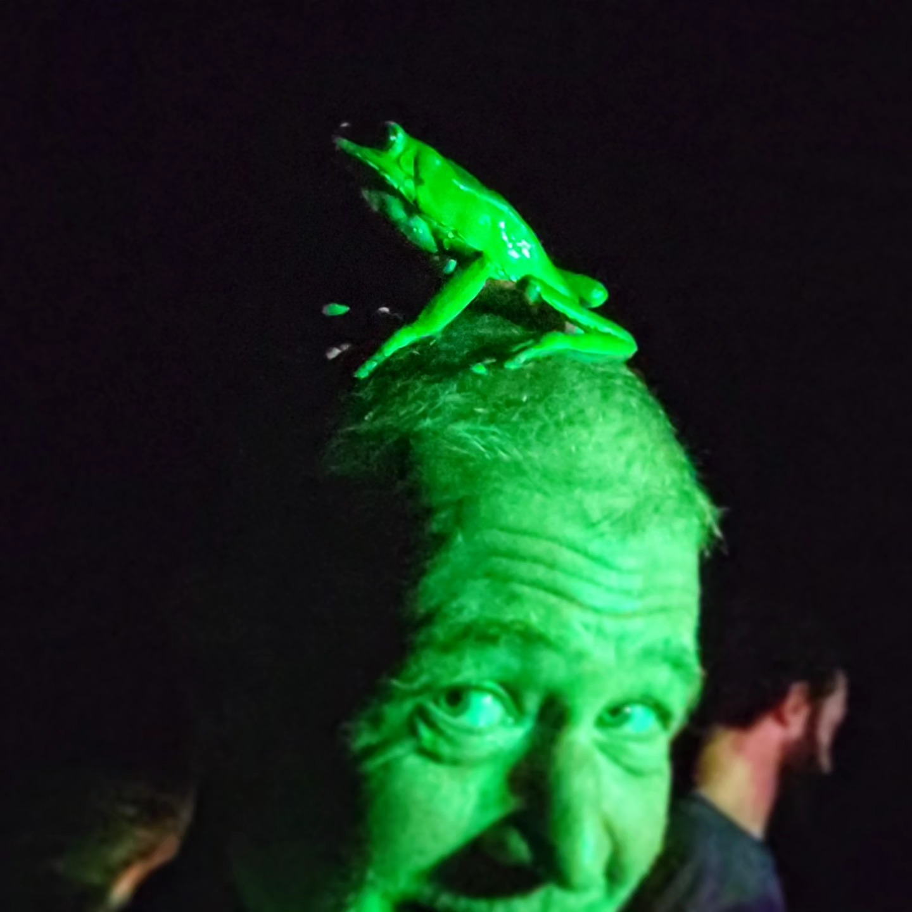

Ivan Borntrager

Summary
Proficient worker dedicated to efficiency and safety. Dependable and hardworking with good understanding of inspection, troubleshooting and common repairs. Quick learner with good intuition and great attention to detail.
Education
- Rainforest Healing Center / CKPI — 2022-2023
- Salt Lake City, UT — Kambo Practitioner Training
- Iquitos, Peru —Advanced Kambo Practitioner Training
- World Brewing Academy — 2020
- Fundamentals of Brewing Technology
- Art Institute — 2010-2012
- Mt. San Jacinto College — 1996-2008
- Theater
- Photography
- Music
- Dance
- Palomar College — 1996
- Northern Arizona University — 1995
Experience
- Quantum Soul Journey / CKPI — August 2023-Present
- Content Creation / Marketing
- Responsible for creating and cutting video to assist with marketing projects to grow this plant medicine and Kambo training organization, as well as assisting with web design. Work with a small marketing team to create an inspirational user experience.
- Rainforest Healing Center — April 2022-Present
- Advanced Kambo Practitioner
- Safely and responsibly administer Kambo in one-on-one ceremonies geared heavily on intention setting and healing root traumas, while maintaining a safe and comfortable environment for the client and process.
- idiedatbirth.com / lavanyamaya.com — 2009-Present
- Writer, Photographer, Videographer, Web Design
- idiedatbirth was a personal project geared toward healing and growth that has evolved into my business of content creation and web design.
- Idyllwild Brewpub — Idyllwild, CA — 2016-2022
- Assistant Brewer
- My responsibilities consisted of every job that needs to be done in a brewery, short of writing the recipes, though I had a hand in writing a few. I was the only employee for most of my time there, so I did everything from cellar management, to gravity readings and dry hopping, to transferring and carbonating or kegging, to brewing on my own, with no significant accidents or loss.
- Idyllwild International Festival of Cinema — Idyllwild, CA — 2010-2020
- Head Projectionist
- Responsibilities were to run a very intense schedule of films and shorts, in a variety of different formats, over 7-10 days, 12 to 16 hours a day, while keeping precise professional presentation and working directly with the film makers on specific requests and details.
- Idyllwild Brewpub — Idyllwild, CA — 2016-2018
- Line Cook
- All responsibilities necessary to run the hot and cold lines, including prepping and cleaning the entire kitchen, with the necessary communication to also run the pass. Food preparation was done on a Montague flat-top, deep fryer, range, and alto shaam, in a high volume and fast paced environment.
- FERRO — Idyllwild, CA — 2015-2017
- Garde Manger
- Responsible for cold line and deserts, with a primary focus on presentation. I also helped prep the entire scratch kitchen, and cook pizza’s in an outdoor stone oven. On the cold line I ran the pass, maintaining efficient communication with the serving staff, hot line, pizza line, and prep.
- Witness Pictures — Los Angeles, CA — 2008-2015
- Actor, Writer, Photographer, Grip, Camera Operator, Production Assistant
- This is an independent production company that produces films, shorts, book trailers, and corporate work. I helped them in whatever capacity they needed in production, from grip work to running the boom, but primarily as an actor, writer, and set photographer.
- The Rustic Theatre — Idyllwild, CA — 2003-2013
- Head Projectionist / Theatre Manager
- I was responsible for running and maintaining a projector and platter system, and oversaw the transition from film to digital in 2012, taking on the maintenance of the digital projector and accompanying hardware and software, while efficiently communicating with the tech and making complicated repairs and rewriting binary. I also ran admissions and concessions, did equipment and building maintenance, and managed employees when necessary.
Skills
- Music - Piano, Guitar, choir, et cetera - 40 years
- Acting (stage and film)- 30 years
- Photography - 25 years
- Writing - 25 years
- Videography and editing - 20 years
- Web design - 10 years